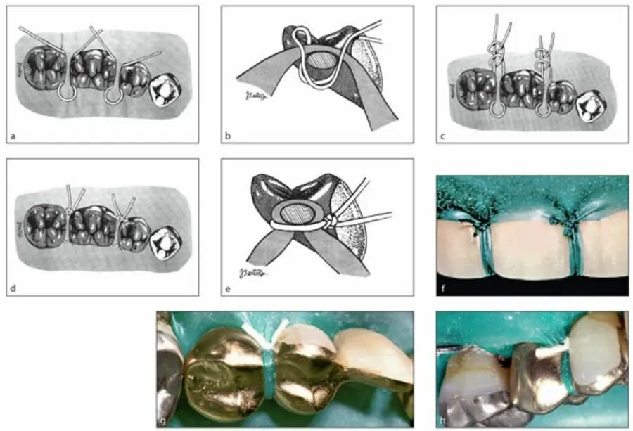

نسخه استخراجشده؛ ترجمه یا تأیید علمی انجام نشده است. وضعیت: captured
مولر اول پایین روکش سرامیکی دارد و حالا درمان ریشه میخواهد. لبهی فاسیال روکش نازک است. دستیار کلمپ مولر با فک دندانهدار را روی فورسپس سوار کرده، چون «روی سرامیک لیز نمیخورد». این کلمپ را میگذاری؟
رابردم مؤثرترین وسیلهی ایزولاسیون در دندانپزشکی ترمیمی است. دربارهی تراش روکش کامل دو دیدگاه هست: بیشتر دندانپزشکان آن را در بیشتر روکشها بیشتر مایهی دردسر میدانند تا کمک، و برخی در همهی مراحل ترمیمهای ریختگی به کارش میبرند. وقتی همهی مارجینها بالای لثهاند، رابردم احتمالاً مؤثرترین راه کنترل رطوبت است. در این کارها رابردم جای روشنی دارد:
نکتهی طلایی: بریج و اسپلینت یک مشکل دارند: جایی که دندانها به هم وصلاند، سپتوم از میانشان رد نمیشود. پس سپتوم را دور محل اتصال ببند، نه از میان آن.
